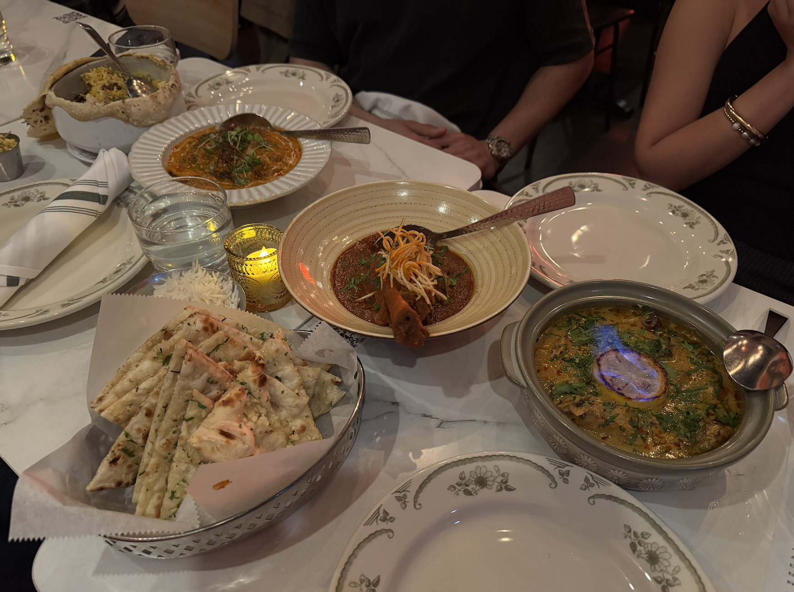

Breakfast by Salt's Cure — 5/5

Manhattan, NY——I don't give out five stars easily, but Breakfast by Salt's Cure genuinely earned it. I ordered the OG griddle cakes and I'm still thinking about them. They're thick, fluffy, and have this slight tang that makes them taste completely different from any pancake I've had before — not too sweet, just perfectly balanced. Everything on the menu feels intentional, like someone actually cared about every ingredient. The portions are generous without being ridiculous. This place reminded me why breakfast is the best meal of the day. If you go and don't order the griddle cakes, I don't know what to tell you.
Gazab — 4/5

Manhattan, NY——Gazab has become one of my go-to spots when I want something bold and satisfying. The chicken and lamb are the standouts — well-seasoned, generous portions, and that spice level hits just right without being overwhelming. The ambiance is genuinely great; it has this lively energy that makes the meal feel like an event. The only reason it's not a five is that it gets loud...like, really loud. Conversation becomes a little bit of a challenge at peak hours. But honestly? That's a minor complaint for food this good. I'd go back without hesitation.
Chongqing Lao Zao — 4.5/5

Flushing, Queens——Genuinely some of the best hotpot I've had in New York, and I don't say that lightly. The broth is rich, deeply spiced, and you can tell it's been made with care (this isn't the kind of flavor you get from a shortcut). Everything we ordered came out fresh, and for what you get, the price is almost shockingly affordable. The half star I'm holding back is purely logistical: it is far, and the wait can test your patience. But the moment the food hits the table, you forget all of it. If you're serious about hotpot, make the trip. It's worth every minute.